교통기사 (2016-05-08 기출문제)
1과목: 교통계획
1. 도시교통계획의 과정과 그 방법에 있어 기초가 이루어진 광역권 교통조사분석으로, 1950년대에 사람 통행실태조사가 최초로 시행된 도시는?
- 뉴욕
- 시카고
- 디트로이트
- 워싱턴
(정답률: 84%)

2. 다음 중 장기교통계획에 비하여 교통체계관리기법(TSM)이 갖는 특징으로 옳지 않은 것은?
- 단기적 편익이 발생한다.
- 주로 소규모 지역을 대상으로 한다.
- 다양한 교통수단을 고려하여 대안을 선택한다.
- 문제 상황이 명확히 정의되고 관측이 가능하다.
(정답률: 83%)
3. 다음 중 교통약자에 포함되지 않는 자는?
- 임산부
- 청소년
- 고령자
- 영유아를 동반한 사람
(정답률: 60%)
4. 사람 통행에 의한 주차 수요 추정법 중 P요소법에 이용되는 변수가 아닌 것은?
- 지역주차 조정계수
- 계절주차 집중계수
- 첨두시 주차집중률
- 건물 연면적
(정답률: 69%)
5. 조사지역 내에 하나 또는 몇 개의 선을 그어 이 선을 통과하는 차량을 조사하여 표본 O-D조사 겨롸를 검증하거나 보완할 때 이용하는 조사방법은?
- 스크린 라인 조사(Screen Line Survey)
- 폐쇄선 조사(Cordon Line Survey)
- 노측 면접 조사(Road Side Interview Survey)
- 가구 방문 조사(Home Interview Survey)
(정답률: 94%)
6. 다음 중 통행 발생(Trip generation) 예측에 있어서 현재의 통행 유출ㆍ유입량에 장래의 인구와 같은 사회ㆍ경제적 지표의 증감률을 곱하여 장래 통행발생량을 예측하는 기법은?
- 원단위법
- 증감률법
- 회귀직선법
- 카테고리분석법
(정답률: 83%)
7. 지능형 교통체계(ITS)의 목적으로 적합하지 않는 것은?
- 교통 소통 향상
- 교통 정보 제공
- 교통 안전 증진
- 도시 개발 촉진
(정답률: 84%)
8. 다음 중 일방통행제의 장단점으로 옳지 않은 것은?
- 교통 안전성 하락
- 대중교통 용량의 감소
- 평균 운행 속도의 증가
- 운전자의 운행 거리 증가
(정답률: 70%)
9. 다음 중 교통수요 4단계 추정법의 장점으로 옳지 않은 것은?
- 단계별로 적절한 모형의 선택이 가능하다.
- 총체적 자료에 의존하여 형태적인 측면 반영이 용이하다.
- 통행패턴의 변화가 급격하지 않은 경우 설명력이 뛰어나다.
- 각 단계별로 결과에 대한 검증을 거침으로써 현실의 묘사가 가능하다.
(정답률: 34%)
10. 교통존 설정(Zoning)의 원칙으로 옳지 않은 것은?
- 존(Zone) 내부에 하나의 중심만 가지도록 한다.
- 존(Zone) 내부의 사회ㆍ경제적 특성이 균일해야 한다.
- 각 존(Zone)의 가구 수, 인구 및 통행량이 비슷한 것이 좋다.
- 존(Zone)의 모양은 중심이 안정되는 삼각형에 가까워야 한다.
(정답률: 77%)
11. 아래의 설명에 해당하는 대중교통 요금제도는?(문제 오류로 정답이 정확하지 않습니다. 정답지를 찾지못하여 임의 정답 1번으로 설정하였습니다. 정답을 아시는 분께서는 오류 신고를 통하여 정답 입력 부탁 드립니다.)
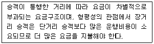
- 정가요금제
- 균일요금제
- 거리요금제
- 구역요금제
(정답률: 32%)
12. 대중교통 비용에 대한 설명으로 옳은 것은?
- 변동비는 교통서비스 공급량과 무관하게 일정하다.
- 고정비는 대중교통체계를 운영하는 데 고정적으로 소요되는 비용으로 인건비, 연료비, 차량관리비 등이 있다.
- 변동비는 교통시설 건설 혹은 차량 구입에 소요되는 자본비이다.
- 대중교통에 소요되는 총 비용은 고정비와 변동비의 합이다.
(정답률: 70%)
13. 교통계획을 기간, 계획대상, 공간적 범위에 따라 분류할 때 계획대상에 따른 유형에 속하는 것은?
- 지역교통계획
- 장기교통계획
- 가로망계획
- 국가교통계획
(정답률: 62%)
14. 10km의 노선을 운행하는 버스가 터미널과 버스정류장에서 소요되는 시간을 포함하여 시간당 평균 25km의 속도로 운행한다면 왕복 운행시간은?
- 44분
- 46분
- 48분
- 50분
(정답률: 59%)
15. 교통수요예측의 4단계 추정 중 통행 발생 단계에서 사용되는 모형은?
- Fratar 모형
- 중력모형
- Detroit 모형
- 회귀분석모형
(정답률: 50%)
16. 다음 중 통행단(Trip-End) 모형의 교통수요 예측 과정을 나타낸 것은?
- 통행발생→수단선택→통행배분→노선배정
- 통행발생→통행배분→수단선택→노선배정
- (통행발생+수단선택)→통행배분→노선배정
- 통행발생→(통행배분+수단선택)→노선배정
(정답률: 60%)
17. 공공자원의 사회적 기회비용을 무엇이라고 하는가?
- 인플레이션
- 잠재가격
- 내부수익률
- 디플레이션
(정답률: 알수없음)
18. Wardrop의 원리에 따르면 아래의 상태를 무엇이라 하는가?
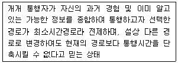
- 사회적 평형상태
- 교통체계의 평형상태
- 수요-공급의 평형상태
- 확률적 사용자 평형상태
(정답률: 알수없음)
19. 다음 중 개별행태모형에 해당하는 것은?
- 원단위법(Unit model)
- 로짓모형(Logit model)
- 중력모형(Gravity model)
- 디트로이트모형(Detroit model)
(정답률: 59%)
20. 다음 중 폐쇄선조사의 조사내용으로 가장 거리가 먼 것은?
- 기종점 조사
- 차종별 통과 교통량
- 자가 승용차 보유 여부
- 시간대별 통과 교통량
(정답률: 82%)
2과목: 교통공학
21. PHF(Peak Hour Factor)에 대한 설명으로 틀린 것은?
- PHF 값은 항상 1.0 이하의 값을 갖는다.
- PHF 값은 도로용량을 분석할 때 이용된다.
- PHF 값은 하루 중의 교통량 변화를 알기 위해 계산된다.
- PHF란 15분 첨두유율을 한 시간 단위로 나타낸 값에 대한 한 시간 교통량이다.
(정답률: 50%)
22. 다음 중 접근지체에 포함되지 않는 것은?
- 정지지체
- 균일지체
- 가속지체
- 감속지체
(정답률: 53%)
23. 중방향 설계시간 교통량(DDHV)를 구할 때 필요하지 않은 요소는?
- 첨두시간 계수
- 설계시간 계수
- 중방향 계수
- 연평균 일교통량
(정답률: 59%)
24. 조건이 다음과 같을 때 첨두시간 계수(PHF)는?
- 0.35
- 0.71
- 1.2
- 3.5
(정답률: 73%)
25. 신호등 교차로에서 지체시간을 계산할 때 연동계수는 어떤 종류의 지체에 적용하게 되어 있는가?
- 증가지체
- 균일지체
- 증분지체
- 추가지체
(정답률: 42%)
26. 어느 구간의 거리를 차량 정지시간(교차로, 역, 정류장)이나 교통정체시간 등을 포함한 총 소요시간으로 나눈 값을 무엇이라 하는가?
- 통행속도
- 주행속도
- 설계속도
- 지점속도
(정답률: 60%)
27. 교통량 조사방법 중 교통량의 요일별ㆍ계절별 변동패턴을 파악하기 위해서 일년 내내 계속적으로 조사하는 것은?
- 상시조사
- 보정조사
- 전역조사
- 관측조사
(정답률: 87%)
28. 차량의 평균속도가 50km/h, 차두평균간격이 25m일 경우 도로의 평균교통량은 얼마인가?
- 500대/시간
- 800대/시간
- 1,000대/시간
- 2,000대/시간
(정답률: 67%)
29. 어느 건물의 주차 가능 용량이 500대이고 1일 주차차량이 2,500대이며 주차 차량들의 평균 주차시간이 2시간이었을 때, 주차장의 주차효율은 얼마인가?(오류 신고가 접수된 문제입니다. 반드시 정답과 해설을 확인하시기 바랍니다.)
- 0.5
- 0.87
- 1.52
- 1.82
(정답률: 40%)
30. 신호주기가 75초인 정주신호 교차로에서 임계시점에 정지한 차량의 수를 조사하여 차량의 정지지체를 계산하려 한다. 정지 차량의 조사간격으로 부적당한 값은?
- 16초
- 15초
- 14초
- 13초
(정답률: 71%)
31. 소요현시율의 합이 0.85, 총 손실시간이 16초일 때, Webster 방식에 의한 적정주기는?
- 136초
- 152초
- 174초
- 193초
(정답률: 79%)
32. 다음 중 일정한 도로구간의 교통류를 설명하는 세 가지 기본적인 특성변수가 아닌 것은?
- 일정시간 동안에 변화한 공간이동량
- 일정시간 동안에 한 지점을 통과한 차량 수
- 일정시간 동안 정지했다가 출발하는 차량 수
- 한 순간에 도로의 일정구간을 점유한 차량 수
(정답률: 74%)
33. 교통량의 시간별 변동을 예측할 수 있거나 포화상태가 번번히 일어나는 교차로에 적합하며 신호시간을 현장에서 쉽게 조정할 수 있는 신호제어 방식은?
- 정주기신호
- 반감응신호
- 완전감응신호
- 교통량-밀도신호기
(정답률: 알수없음)
34. 다음의 그래프와 같은 속도와 밀도의 모형은 무엇인가?
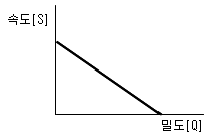
- Gazis 모형
- Edie 모형
- Greenberg 모형
- Greenshields 모형
(정답률: 73%)
35. 신호운영의 단점으로 옳지 않은 것은?
- 추돌사고와 같은 유형의 사고가 증가한다.
- 부적절한 곳에 설치될 경우 불필요한 지체가 발생한다.
- 교통량이 많은 도로를 횡단해야 하는 차량이나 보행자를 횡단시킬 수 있다.
- 첨두시간이 아닌 경우 교차로의 총 지체시간과 연료 소모를 증가시킬 수 있다.
(정답률: 50%)
36. 원하는 속도 선택의 자유도는 비교적 높은 편이지만, 교통류 내 다른 운전자의 출현으로 각 개인의 행동이 다소 영향을 받게 되는 교통류의 서비스 수준은?
- LOS A
- LOS B
- LOS C
- LOS D
(정답률: 65%)
37. 간선도로에서 도로의 서비스 수준을 나타내는 효과척도는?
- 교통량 대 용량비
- 지체도
- 평균통행속도
- 지체시간 백분율
(정답률: 60%)
38. 어느 도로 구간의 교통량 구성비가 승용차 70%, 트럭 20%, 버스 10%일 때 도로 용량 산정을 위한 중차량보정계수는? (단, 트럭과 버스의 승용차 환산계수는 각각 1.7, 1.5이다.)
- 0.61
- 0.66
- 0.71
- 0.84
(정답률: 71%)
39. 다음 중 설계 목적을 위한 최소추월시거의 계산을 위해 교통행태에 관하여 가정하는 사항으로 옳지 않은 것은?
- 피추월차량은 일정한 가속도를 가지고 주행한다.
- 추월차량은 추월할 기회를 찾으면서 피추월차량과 같은 속도로 안전거리를 유지하며 앞차를 따른다.
- 추월차량의 운전자는 추월행동을 개시할 때까지 행동판단 및 반응시간을 필요로 한다.
- 추월차량은 추월하는 동안 가속을 한다.
(정답률: 39%)
40. 다음 중 고속도로 기본구간 서비스 수준의 주요 효과척도(MOE)는?
- 평균속도
- 설계속도
- 밀도
- 지체시간
(정답률: 알수없음)
3과목: 교통시설
41. 고속도로 비상주차대의 표준 설치간격은?
- 500m
- 750m
- 1,000m
- 1,250m
(정답률: 64%)
42. 다른 도로와의 연결허가 금지구간으로 옳지 않은 곳은?
- 교차로 주변 연결로 등의 설치 제한거리 이내의 구간
- 교통 등의 시설물과 근접되어 변속차로를 설치할 수 없는 구간
- 버스정차대, 측도 등 주민편의시설이 설치되어 이를 옮겨 설치할 수 없는 구간
- 종단경사가 산지에서 5%를 초과하는 구간
(정답률: 80%)
43. 시거에 대한 설명으로 ( )에 알맞은 것은?
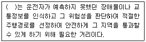
- 정지시거
- 앞지르기시거
- 피주시거
- 가각시거
(정답률: 70%)
44. 평기구간의 고속도로를 100km/h로 주행하던 자동차가 장애물을 보고 정지할 수 있는 최소정지거리는? (단, 마찰계수 0.30, 인지반응시간 2.5초이다.)
- 약 120.8m
- 약 160.5m
- 약 200.7m
- 약 240.2m
(정답률: 72%)
45. 설계속도가 60km/h인 도로의 곡선부를 설계하고자 한다. 횡방향마찰계수가 0.4, 편경사가 6%일 때 차량이 안전하게 주행할 수 있는 최소곡선반경은 얼마로 하여야 하는가?
- 약 62m
- 약 67m
- 약 72m
- 약 77m
(정답률: 62%)
46. 다음 중 길어깨의 필요성으로 옳지 않은 것은?
- 차도, 보도, 자전거ㆍ보행자도로에 접속하여 도로의 주요 구조부를 보호한다.
- 유지ㆍ관리작업 공간이나 지하매설물의 설치 공간으로 제공된다.
- 절토부에서는 곡선부의 시거를 한정시켜 교통통제에 우월한 효과를 갖는다.
- 유지ㆍ관리가 양호한 길어깨는 도로의 미관을 높인다.
(정답률: 50%)
47. 도로 및 교통조건이 아래와 같을 때 필요한 차로 수는?
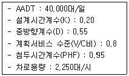
- 양방향 2차로
- 양방향 6차로
- 양방향 8차로
- 양방향 10차로
(정답률: 42%)
48. 자동차 전용도로의 설계속도는 최소 얼마 이상으로 하는가? (단, 자동차 전용도로가 도시지역에 있거나 소형차도로인 경우는 고려하지 않는다.)
- 60km/h
- 70km/h
- 80km/h
- 90km/h
(정답률: 30%)
49. 측도에 대한 설명으로 옳지 않은 것은?
- 4차로 이상 지방지역도로 또는 도시지역도로에서 도로 주변으로 출입이 제한되는 경우 필요에 따라 설치된다.
- 일반적으로 선형, 경사 등이 제한된 높은 규격의 도로에 필요하다.
- 고속도로가 도시지역을 통과할 경우에 교통의 분산이나 합류를 할 때 유용하다.
- 좌회전이나 유턴 차량이 대기할 수 있는 공간을 확보한다.
(정답률: 37%)
50. 보도를 설치할 때 보도의 유효폭에 대한 기준으로 옳은 것은?(단, 지방지역의 도로와 도시지역의 국지도로 중 지형상 불가능하거나 기존 도로의 증설ㆍ개설 시 불가피하다고 인정되는 경우는 고려하지 않는다.)
- 보도의 유효폭은 최소 1.0m 이상이어야 한다.
- 보도의 유효폭은 최소 2.0m 이상이어야 한다.
- 보도의 유효폭은 최소 3.0m 이상이어야 한다.
- 보도의 유효폭은 최소 4.0m 이상이어야 한다.
(정답률: 75%)
51. 다음 중 우리나라 기준 차량신호기 설치기이 되는항목이 아닌 것은?
- 차량 교통량
- 보행자 교통량
- 신호연등
- 통학로
(정답률: 50%)
52. 다음 중 불완전 입체교차로의 가장 대표적인 유형으로 형태가 단순하고 용지가 적게 들며 비용이 저렴하고 교통의 우회거리도 가장 짧아 경제적으로 유리한 형태는?(문제 오류로 정답이 정확하지 않습니다. 정답지를 찾지못하여 임의 정답 1번으로 설정하였습니다. 정답을 아시는 분께서는 오류 신고를 통하여 정답 입력 부탁 드립니다.)
- 다이아몬드형
- 불안전 클로버형
- 트럼펫형
- 준직결+평면교차형
(정답률: 79%)
53. 설계시간 교통량(K30)의 일반적인 특징으로 옳지 않은 것은?
- 연평균 일교통량의 증가와 함께 그 대상도로 구간의 K30은 일반적으로 감소한다.
- K30이 높을수록 교통량의 변화가 심하다.
- 대상도로 구간 인접지역의 개발이 많이 이루어질수록 K30은 증가한다.
- K30은 일반적으로 관광도로에서 가장 높은 값을 나타내며 지방지역도로, 도시 외곽도로, 도시 내 도로 순으로 낮은 값을 갖는다.
(정답률: 55%)
54. 입체교차 변속차로의 설계에 대한 설명으로 올바른 것은?
- 변속차로 변이구간 길이는 최소 60m 이상으로 하여야 한다.
- 변속차로 길이는 연결로가 2차로인 경우 해당 기준의 1.5배 이상으로 하여야 한다.
- 본선 종단경사의 크기에 따른 감속차로의 길이보정률은 최대 1.50 비율 이하로 하여야 한다.
- 본선 종단경사의 크기에 따른 가속차로의 길이보정률은 최대 1.35 비율 이하로 하여야 한다.
(정답률: 42%)
55. 다음 중 평면교차로에서 발생하는 상충으 종류가 모두 옳제 나열된 것은?(문제 오류로 정답이 정확하지 않습니다. 정답지를 찾지못하여 임의 정답 1번으로 설정하였습니다. 정답을 아시는 분께서는 오류 신고를 통하여 정답 입력 부탁 드립니다.)
- 분류상충, 합류상충, 교차상충
- 교차상충, 회전상충, 추돌상충
- 합류상충, 추돌상충, 분류상충
- 직각상충, 측면상충, 회전상충
(정답률: 84%)
56. 도로의 구조ㆍ시설 기준에 관한 규칙상 2차로 도로에서 앞지르기를 허용하는 구간의 설계속도가 70km/h일 때 최소 앞지르기 시거의 기준으로 옳은 것은?
- 350m
- 400m
- 480m
- 540m
(정답률: 64%)
57. 오르막차로를 설치할 때 검토할 유의사항이 아닌 것은?
- 고속 자동차와 저속 자동차의 구성비
- 오르막 경사의 낮춤과 오르막차로 설치의 경제성
- 오르막차로 설치에 따른 교통사고 예방 효과
- 오르막차로와 연결도로의 주행속도
(정답률: 28%)
58. 교통의 안전과 소통의 원활을 도모하기 위하여 설치하는 도로교통정보 안내시설에 관한 설명이 옳지 않은 것은?
- 도로교통정보 안내시설은 설치 구조 형식에 따라 문형식, 내면식, 부착식 등이 있다.
- 도로교통정보 안내시설은 표출 형식에 따라 문자식 표지, 도형식 표지 등이 있다.
- 도로교통정보 안내시설로는 도로전광표지(VMS), 폐쇄회로티비(CCTV), 교통량검지기 등이 있다.
- 문자의 주요 표시내용은 도로, 기상, 교통, 규제상황, 우회의 지시 등으로 간결하고 명료하게 표현하여야 한다.
(정답률: 72%)
59. 설계기준 자동차 종류별로 폭과 길이에 대한 제원을 연결한 것으로 틀린 것은?
- 승용자동차 : 2.0m, 4.7m
- 소형자동차 : 2.0m, 6.0m
- 대형자동차 : 2.5m, 13.0m
- 세미트레일러 : 2.5m, 16.7m
(정답률: 62%)
60. 교통정온화 시설의 종류 중 속도 저감을 위한 물리적 교통억제기법이 아닌 것은?
- 시케인(chicane)
- 소형 회전교차로
- 볼라드(bollard)
- 노면요철포장
(정답률: 55%)
4과목: 도시계획개론
61. 다음 중 용도지역에 해당하지 않는 것은?
- 도시지역
- 관리지역
- 준농림지역
- 자연환경보전지역
(정답률: 40%)
62. 도시계획시설로서 보행자전용도로의 최소 폭원 기준은?
- 1.0m 이상
- 1.5m 이상
- 2.0m 이상
- 2.5m 이상
(정답률: 43%)
63. 도시ㆍ군계획시설에 대하여 도시ㆍ군계획시설 결정의 고시일부터 최대 얼마 이내에 대통령령으로 정하는 바에 따라 단계별 집행계획을 수립하여야 하는가?
- 1년
- 2년
- 3년
- 5년
(정답률: 28%)
64. 다음 중 격자형 도로망에 대한 설명으로 옳은 것은?
- 교통의 흐름에 보았을 때 도심집중이 강하다.
- 중심지를 기점으로 주요 간선로에 따라 도시개발축이 형성된다.
- 지형이 평탄한 도시에 적합하지만 도로기능의 다양성이 결여된다.
- 인구 100만 이상 대도시계획에 적합하며 횡적인 연결은 환상선으로 이루어진다.
(정답률: 60%)
65. 보차분리기법에는 평면분리방식, 입체분리방식, 시간분리방식 등이 있다. 다음 중 평면분리방식에 해당되지 않는 것은?
- 보도
- 아케이드
- 보행자전용도로
- 보행자데크
(정답률: 알수없음)
66. 다음 중 도시기본계획의 성격과 가장 거리가 먼 것은?
- 도시관리계획 수립의 지침이 된다.
- 도시에 대한 기본적이고 장기적인 개발구상이다.
- 공간구조의 발전 방향을 제시하는 종합계획이다.
- 개인의 재산권에 대한 법적 구속력을 바탕으로 한다.
(정답률: 67%)
67. 도시개발정책 중 성장관리(Growth Management)의 목적이 아닌 것은?
- 도시 성장률의 단일화
- 도시 내 개발격차의 시정
- 도시의 외연적 확산 방지
- 도시 주변 자연환경의 보존
(정답률: 47%)
68. 다음 중 기준 연도의 인구와 출생률, 사망률, 인구 이동 등의 인구 변화 요인을 고려하여 장래 인구를 추정하는 방법은?
- 직선모형
- 비율적용법
- 로지스틱커브법
- 집단생잔법
(정답률: 60%)
69. 다음 중 도시화의 내용으로 볼 수 없는 것은?
- 인구의 정착현상
- 인구의 분산현상
- 도시문화의 확산현상
- 도시사회구조의 확산현상
(정답률: 59%)
70. 다음 중 하워드(E. Hoeard)가 제시한 전원도시(garden city)에 대한 설명으로 옳지 않은 것은?
- 인구는 3~5만 명으로 제한한다.
- 계획집행의 철저를 기하기 위하여 토지는 공유화한다.
- 전원적 성격을 유지하기 위하여 공업기능을 배제한다.
- 도시 주변에 식량의 자급자족을 위한 농업지대를 확보한다.
(정답률: 54%)
71. 현행 국토의 계획 및 이용에 관한 법률에서 정하고 있는 개발밀도관리구역의 지정기준과 가장 거리가 먼 것은?(문제 오류로 정답이 정확하지 않습니다. 정답지를 찾지못하여 임의 정답 1번으로 설정하였습니다. 정답을 아시는 분께서는 오류 신고를 통하여 정답 입력 부탁 드립니다.)
- 당해 지역의 도로서비스 수준이 매우 낮아 차량통행이 현저하게 지체되는 지역
- 당해 지역의 도로율이 국토교통부령이 정하는 용도지역별 도로율에 20퍼센트 이상 미달하는 지역
- 향후 2년 이내에 당해 지역의 수도에 대한 수요량이 수도시설의 시설용량을 초과할 것으로 예상되는 지역
- 향후 3년 이내에 당해 지역의 학생 수가 학교수용능력을 20퍼센트 이상 초과할 것으로 예상되는 지역
(정답률: 54%)
72. 인구 100만 이상의 대도시 계획에 적합하며, 횡적인 연결은 환상선으로, 도심부와 교외 및 외곽은 방사선으로 연결하는 형태로 도쿄, 파리가 대표적인 가로망 구성 형태는?
- 대각선 삽입형
- 방사형
- 방사환상형
- 격자형
(정답률: 70%)
73. 게데스(P. Geddes)가 제안한 개념으로, 한 때 분리되어 있던 취락이 방사형 발달을 통해 하나의 연속적인 시가지로 합쳐지는 현상을 무엇이라고 하는가?
- 메트로폴리스(Metropolis)
- 메갈로폴리스(Megalopolis)
- 코너베이션(Conurbation)
- 에큐메노폴리스(Ecumenopolis)
(정답률: 50%)
74. 근린생활권의 위계를 작은 단위에서 큰 단위로 옳게 나열한 것은?
- 근린분구 → 근린주구 → 인보구
- 인보구 → 근린분구 → 근린주구
- 근린주구 → 근린분구 → 인보구
- 인보구 → 근린주구 → 근린분구
(정답률: 59%)
75. 도시공원의 유형을 크게 생활권공원과 주제공원으로 구분할 때, 다음 중 주제공원에 해당하지 않는 것은?
- 문화공원
- 수변공원
- 체육공원
- 어린이공원
(정답률: 59%)
76. 수도권의 인구와 산업을 적정하게 배치하기 위하여 구분한 권역에 해당하지 않는 것은?
- 과밀억제권역
- 성장관리지역
- 자연보전권역
- 개발제한권역
(정답률: 54%)
77. 대가구(super block)가 도입되게 된 직접적인 배경은 무엇인가?
- 통과 교통의 배제
- 공원녹지 배치의 융통성
- 토지이용의 다양화
- 편의시설 접근의 용이성
(정답률: 46%)
78. 다음 조건에 따른 주거지역의 택지면적은?
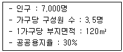
- 342,857m2
- 285,714m2
- 240,013m2
- 200,062m2
(정답률: 43%)
79. 국토의 계획 및 이용에 관한 법률에 의한 기반시설의 대분류 중 교통시설에 해당하지 않는 것은?
- 주차장
- 궤도
- 광장
- 운하
(정답률: 47%)
80. 토지이용계획을 수립함ㅇ 있어서 정량적인 예측변수가 아닌 것은?
- 기술혁신
- 고용자 수
- 지역소득
- 지역총생산
(정답률: 60%)
5과목: 교통관계법규
81. 다음은 노상주차장의 장애인 전용주차구획설치에 관한 내용이다. ( )에 들어갈 내용으로 옳은 것은?
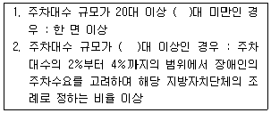
- 50
- 60
- 70
- 80
(정답률: 67%)
82. 도로교통법에 따른 안전표지의 종류가 아닌 것은?
- 주의표지
- 위험표지
- 보조표지
- 지시표지
(정답률: 54%)
83. 다음은 접도구역의 지정에 관한 내용이다. ( )에 들어갈 내용으로 옳은 것은?(단, 고속국도의 경우는 고려하지 않는다.)
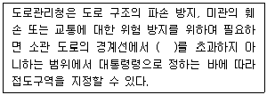
- 5m
- 10m
- 15m
- 20m
(정답률: 24%)
84. 도로교통법에서 정의하는 자동차에 해당하지 않는 것은?
- 승용자동차
- 승합자동차
- 화물자동차
- 원동기장치자전거
(정답률: 74%)
85. 주차장법상 부설주차장의 설치대상 시설물이 골프장인 경우 부설주차장의 설치기준으로 옳은 것은?
- 시설면적 100m2당 1대
- 시설면적 150m2당 1대
- 1홀당 10대
- 1홀당 5대
(정답률: 79%)
86. 다음 중 도로교통법상'차'에 해당하지 않는 것은?
- 자전거
- 건설기계
- 전동휠체어
- 원동기장치자전거
(정답률: 55%)
87. 교통안전법상 국가교통안전기본계획은 몇 년 단위로 수립하여야 하는가?
- 20년
- 15년
- 10년
- 5년
(정답률: 46%)
88. 다음 중 도로교통법상 보행자의 통행방법이 아닌 것은?
- 보행자는 보도에서는 우측통행을 원칙으로 한다.
- 보행자는 횡단보도가 설치되어 있지 아니한 도로에서는 가장 짧은 거리로 횡단하여야 한다.
- 보행자는 보도와 차도가 구분된 도로에서는 언제나 보도로 통행하여야 한다. 다만, 차도를 횡단하는 경우, 도로공사 등으로 보도의 통행이 금지된 경우나 그 밖의 부득이한 경우에는 그러하지 아니하다.
- 보행자는 보도와 차도가 구분되지 아니한 도로에서는 차마와 마주보지 아니하는 방향의 길가장자리구역으로 통행하여야 한다. 다만, 도로의 통행방향이 일방통행인 경우에는 차마를 마주보고 통행할 수 있다.
(정답률: 47%)
89. 도로교통법상 차마의 교통을 원활하게 하기 위하여 필요한 경우 도로에 행정자치부령으로 정하는 차로를 설치할 수 있는 자는?
- 지방경찰청장
- 도지사
- 군수
- 시장
(정답률: 40%)
90. 교통안전법상 국가교통안전기본계획에 포함되어야 할 내용으로 거리가 먼 것은?
- 교통안전지식의 보급 및 교통문화 향상 목표
- 교통안전 전문 인력의 양성
- 교통안전담당자 지정에 관한 사항
- 교통안전정책의 목표달성을 위한 부분별 추진전략
(정답률: 70%)
91. 도로를 횡단하는 보행자나 통행하는 차마의 안전을 위하여 안전표지나 이와 비슷한 인공구조물로 표시한 도로의 부분을 무엇이라 하는가?
- 안전지대
- 보행자전용도로
- 횡단보도
- 길가장자리구역
(정답률: 50%)
92. 도로교통법에 따른 용어의 정의가 틀린 것은?
- 차로 : 차마가 한 줄로 도로의 정하여진 부분을 통행하도록 차선으로 구분한 차도의 부분
- 차선 : 차로와 차로를 구분하기 위하여 그 경계지점을 안전표지로 표시한 선
- 정차 : 운전자가 10분을 초과하지 아니하고 차를 정지시키는 것으로서 주차 외의 정지 상태
- 횡단보도 : 보행자가 도로를 횡단할 수 있도록 안전표지로 표시한 도로의 부분
(정답률: 62%)
93. 다음 중 도시지역의 도로유형에 따른 설계속도 기준이 옳은 것은?
- 국지도로 : 50km/h 이상
- 고속도로 : 120km/h 이상
- 주간선도로 : 100km/h 이상
- 보조간선도로 : 60km/h 이상
(정답률: 34%)
94. 보도는 연석(緣石)이나 방호울타리 등의 시설물을 이용하여 차도와 분리하여야 하는데 차도에 접하여 연석을 설치하는 경우 그 높이는 얼마 이하로 해야 하는가?
- 20cm
- 25cm
- 30cm
- 35cm
(정답률: 59%)
95. 도로교통법 시행규칙에 따른 횡단보도의 설치기준이 틀린 것은?
- 횡단보도에는 횡단보도표시와 횡단보도 표지판을 설치한다.
- 횡단보도는 육교ㆍ지하도 및 다른 횡단보도로부터 500m 이내에는 설치하니 아니한다.
- 횡단보도를 설치하고자 하는 장소에 횡단보행자용 신호기가 설치되어 있는 경우에는 횡단보도표시를 설치한다.
- 횡단보도를 설치하고자 하는 도로의 표면이 포장되지 아니하여 횡단보도표시를 할 수 없는 때에는 횡단보도 표지판을 설치한다.
(정답률: 64%)
96. 규제표지에 부착ㆍ설치하는 보조표지에 있어서 차량의 종류를 기재할 때 사용하는 약칭과의 연결이 틀린 것은?
- 승용자동차 - 택시ㆍ승용
- 승합자동차 - 승합
- 화물자동차 - 화물
- 이륜자동차 - 이륜
(정답률: 65%)
97. 도로교통법상 자동차 등의 운행속도 기준에 대한 설명으로 옳은 것은? (단, 비ㆍ안개ㆍ눈 등으로 인한 악천후 시는 고려하지 않는다.)
- 자동차전용도로에서의 최고속도는 매시 100킬로미터, 최저속도는 매시 20킬로미터
- 편도 1차로 고속도로에서의 최고속도는 매시 90킬로미터, 최저속도는 매시 40킬로미터
- 편도 2차로 이사으이 고속도로에서의 최고속도는 매시 130킬로미터, 최저속도는 매시 40킬로미터
- 일반도로(고속도로 및 자동차전용도로 외의 모든 도로를 말한다.)에서는 매시 60킬로미터 이내. 다만 편도 2차로 이상의 도로에서는 매시 80킬로미터 이내
(정답률: 57%)
98. 도로와 철도가 평면교차하는 경우 교차각에 대한 기준으로 옳은 것은?
- 도로와 철도의 교차각을 15도 이상으로 할 것
- 도로와 철도의 교차각을 15도 이하로 할 것
- 도로와 철도의 교차각을 45도 이상으로 할 것
- 도로와 철도의 교차각을 45도 이하로 할 것
(정답률: 75%)
99. 도로교통법 시행령상 밤에 도로에서 차를 운행하는 경우 운전자가 켜야 하는 등화 구분이 틀린 것은?
- 견인되는 차 : 실내조명등
- 원동기장치자전거 : 전조등 및 미등
- 자동차 등 외의 모든 차 : 지방경찰청장이 정하여 고시하는 등화
- 자동차 : 자동차안전기준에서 정하는 전조등, 차폭등, 미등, 번호등과 실내조명등(실내조명등은 승합자동차와 「여객자동차 운수사업법」에 따른 여객자동차운송사업용 승용자동차만 해당한다.)
(정답률: 42%)
100. 다음 중 교통안전법상 지정행정기관에 해당하지 않는 것은?(단, 국무총리가 지정하는 중앙행정기관은 고려하지 않는다.)
- 국방부
- 교육부
- 법무부
- 기획재정부
(정답률: 60%)
6과목: 교통안전
101. 어느 차량이 주행 중 도로를 벗어나 9m 아래의 계곡으로 떨어져 도로 끝에서 수평거리 20m인 지점에 추락하였다. 이 차량이 도로를 벗어날 때의 주행속도는 얼마인가? (단, 중력가속도 g=9.8m/sec2으로 가정한다.)
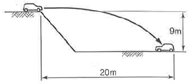
- 약 15km/h
- 약 27km/h
- 약 53km/h
- 약 75km/h
(정답률: 57%)
102. 다음 중 시거불량에 의한 교통사고 예방대책으로 가장 거리가 먼 것은?
- 장애물 제거
- 예고표지 설치
- 시선유도표지 설치
- 접근로 테이퍼 설치
(정답률: 65%)
103. 회전을 허용하는 양방향 2차선의 4지 교차로에서 상충 가능한 지점의 수는?
- 12개소
- 16개소
- 24개소
- 32개소
(정답률: 60%)
104. 다음 중 교통사고의 재현에 필요한 자료가 아닌 것은?
- 노면 상태
- 활주흔(Skid Mark)
- 사고차량의 검사 유무
- 사고차량의 최종 위치
(정답률: 67%)
1⑤. A, B, C 세 지점에서 발생한 피해 등급별 사고건수가 아래와 같을 때, 이를 분석한 내용으로 옳지 않은 것은?(단, 각 피해 등급별 사고 심각도의 가중치는 사망사고가 12, 중상사고 6, 경상사고 3, 대물사고 1이다.)
- 사고건수법 적용 시 A지점과 B지점은 동일한 위험도 순위를 가진다.
- 사고심각도법 적용 시 세 지점의 위험도는 C ＞ A ＞ B의 순서로 나타난다.
- 일반적으로 사고심각도법의 경우 사망사고의 건수가 위험도 순위에 가장 큰 영향을 미친다.
- 각 피해 등급에 부여되는 심각도 가중치가 변경되면 지점 간 사고심각도법에 의한 순위가 달라질 수 있다.
(정답률: 알수없음)
106. 자동차의 운전자는 고장이나 그 밖의 사유로 고속도로 등에서 자동차를 운행할 수 없게 되었을 때 고장자동차의 표지를 설치하여야 한다. 이때 고장자동차의 표지는 해당 자동차로부터 최소 얼마 이상의 뒤쪽 도로상에 설치하여야 하는가? (단, 밤의 경우는 고려하지 않는다.)
- 100m
- 200m
- 500m
- 1000m
(정답률: 46%)
107. 다음 중 도로정보를 전달하는 방법에 대한 설명으로 잘못된 것은?
- 규격화(Coding) - 개별 도로정보를 모아 언어(문자)로 표기하여 전달하는 것
- 병행(Redundancy) - 같은 내용의 도로정보를 서로 다른 방법으로 함께 전달하는 것
- 반복(Rrpertition) - 같은 내용을 같은 방법으로 2회 이상 전달하는 것
- 분산(Spreading) - 도로정보가 너무 집중된 지역에서 덜 중요한 표지판을 철거하거나 상류부 또는 하류부로 이전하여 운전자가 이해하는 시간을 주는 것
(정답률: 40%)
108. 사고경험에 기초한 위험지의 선정 기법 중 아래 설명에 해당하는 것은?
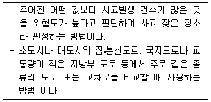
- 사고율법
- 사고건수법
- 사고건수-사고율법
- 사고율-통계적 방법
(정답률: 72%)
109. 횡단보도 설치기준에 관한 설명 중 옳지 않은 것은?
- 횡단보도에는 횡단보도표시와 횡단보도 표지판을 설치한다.
- 횡단보도는 육교ㆍ지하도 및 다른 횡단보도로부터 최소 300m 이내에는 설치하지 아니한다.
- 횡단보들 설치하고자 하는 도로의 표면이 포장되지 아니하여 횡단보도표시를 할 수 없는 때에는 횡단보도표지판을 설치한다.
- 횡단보도를 설치하고자 하는 장소에 횡단보행자용 신호기가 설치되어 있는 경우에는 횡단보도표시를 설치한다.
(정답률: 65%)
110. 교통사고로 인한 인명피해에 있어서 사망, 중상, 경상, 부상신고로 나눌 때 부상신고란 며칠 미만의 치료를 요하는 경우를 말하는가?
- 10일
- 30일
- 5일
- 3일
(정답률: 알수없음)
111. 사고다발지점에 대한 개선사업의 경제적 가치를 평가하는 간단한 방법으로, 사업 후 1년간의 사고 감소 효과를 순현재가치로 환산하여 사업소요 비용과 비교하는 방법은?
- FYRR 방법
- IRR 방법
- B/C 방법
- NPV 방법
(정답률: 50%)
112. 한 차량이 50m 거리를 미끄러져 주차한 차량과 충돌하였으며 충돌 후 두 차량이 18m 미끄러져 정지하였다. 양 차량의 무게가 동일할 때 주행차량의 초기 속도는?(단, 마찰계수는 0.5이다.)
- 136.4km/h
- 124.5km/h
- 113.5km/h
- 108.2km/h
(정답률: 59%)
113. 도로교통안전을 강화하기 위해 사용하는 3E에 포함되지 않는 것은?
- 교육(Education)
- 공학(Engineering)
- 단속(Enforcement)
- 효율(Efficiency)
(정답률: 73%)
114. 운전자의 태도와 교통사고와의 일반적인 관계가 옳은 것은?
- 사고다발자는 책임감이 강하다.
- 사고다발자는 강한 준법정신을 가지고 있다.
- 교통사고와 운전자의 책임감과는 관계가 없다.
- 사고다발자는 일반운전자에 비하여 공격적이고 자신의 능력을 과신하는 경향이 있다.
(정답률: 69%)
115. 도로 주행 시 노면과 타이어 사이에 얇은 수막이 생겨 브레이크 기능을 상실하게 하는 현상은?
- Wet Fading
- Standing Wave
- Hydro Planing
- Morning Effect
(정답률: 알수없음)
116. 도로의 포장 표면에 일정한 규격으로 홈을 형성하여 노면과 타이어의 마찰 저항을 높이고, 우천 시 배수를 원활하게 하여 수막현상을 완화함으로써 미끄럼을 방지하는 공법은?
- 그루빙(Grooving)
- 노면평삭(Planing)
- 숏 블라스팅(Shot Blasting)
- 개립도 마찰층(Open-Graded Friction Course)
(정답률: 59%)
117. 다음 중 곡선 미끄럼에 해당하는 것은?
- 우측 후륜만 전륜의 미끄럼 흔적을 벗어난 경우
- 좌측 후륜만 전륜의 미끄럼 흔적을 벗어난 경우
- 양 후륜의 미끄럼 흔적 모두가 전륜의 미끄럼 흔적을 벗어난 경우
- 양 후륜의 미끄럼 흔적 모두가 전륜의 미끄럼 흔적을 벗어나니 않은 경우
(정답률: 70%)
118. 도시지역의 일반도로에 중앙분리대를 설치할 때 중앙분리대의 최소 폭 기준으로 옳은 것은?
- 3.0m
- 2.0m
- 1.5m
- 1.0m
(정답률: 62%)
119. 교통사고 요인 중 교통환경 요인에 해당하지 않는 것은?
- 차량 교통량
- 통행차량 구성
- 보행자 교통량
- 운전자의 운전습관
(정답률: 50%)
120. 사고경험에 기초한 사고 위험 지점 선정을 위한 기법 중 사고율 통계적 방법(Rate Quality Control Method)에서는 다음의 식을 사용하는데, 여기서 RC가 의미하는 것은?
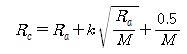
- 평균사고율
- 총교통사고율
- 증가사고율
- 임계사고율
(정답률: 54%)